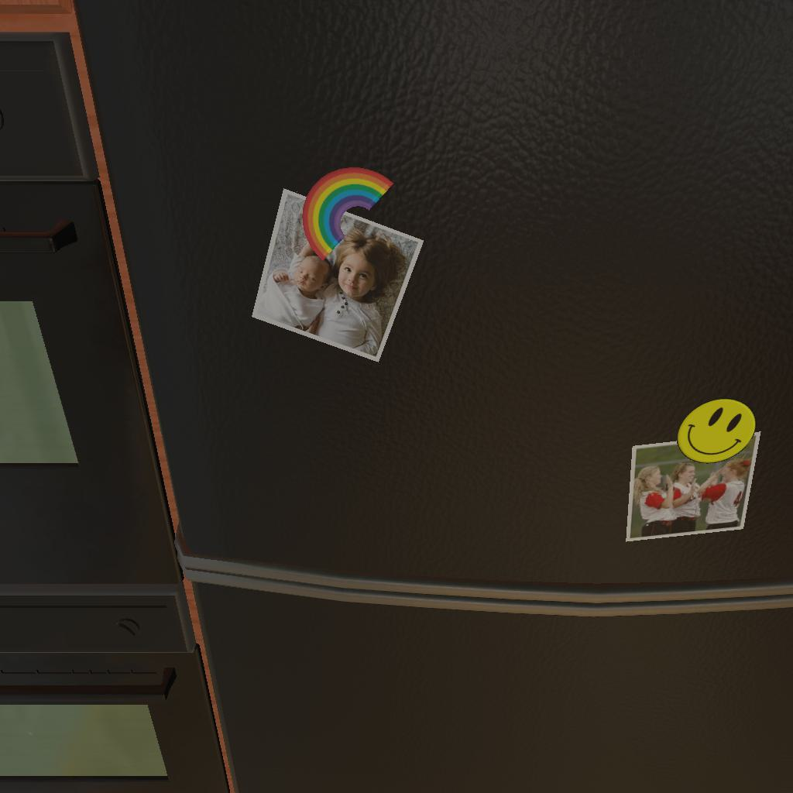
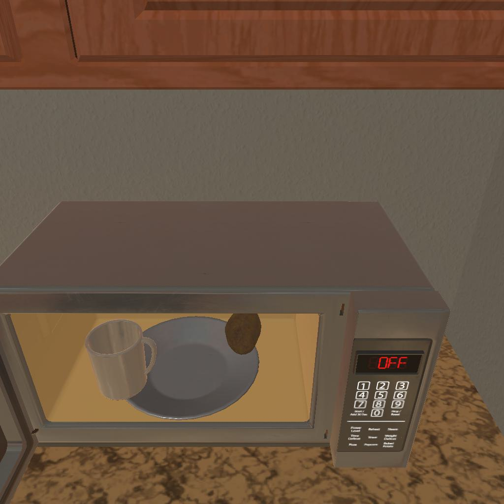

---------------------------------------------------------task: 19---------------------------------------------------------
--------------------------------------------------------------------------------------------------------------------------------------------------------------------
--------------------------------------------------------------------------------------------------------------------------------------------------------------------
Step:--------------------------------------------------------------------------12-------------------------------------------------------------------------------
----------------------------------------
VLM Prompt:
Image1:
Image2:
Image3:
**Instruction**
1. Analyze the provided images to identify all visible household objects and compare the difference between images (e.h. whether the object is opened or not and taken on hand or not), focusing on those relevant to the task description "put a cool tomato in microwave."
2. Use the analysis of images and the task hint "The agent must find an object of the desired type, pick it up, go to a fridge, cool the object with the fridge, then find the correct location to place it, and put it down there. The agent does not need to use the fridge button or open the fridge to cool the object, and the agent just needs to do action that is "cool the object with the fridge"." to answer the question: what is the most reasonable action in the choices for the task description "put a cool tomato in microwave"?
3. Decide and write the answer using the template: The answer is: (i): , where i is the real number. If there is no desired object in images, search every place based on **Initial Observation** to find the object. And if no one is exactly correct, choose a similar answer.
**Initial Observation**
You are in the middle of a room. Looking quickly around you, you can see cabinet (1-15), fridge (1), countertop (1-4), drawer (1-4), microwave (1), toaster (1), coffeemachine (1), garbagecan (1), sink (1), stoveburner (1-3), sinkbasin (1)
**Answer Choices**
(1): go to cabinet 2
(2): go to cabinet 3
(3): go to countertop 1
(4): go to cabinet 4
(5): go to cabinet 5
(6): go to cabinet 6
(7): go to cabinet 7
(8): go to drawer 1
(9): go to drawer 2
(10): go to cabinet 8
(11): go to drawer 3
(12): go to cabinet 9
(13): go to cabinet 10
(14): go to drawer 4
(15): go to cabinet 11
(16): go to toaster 1
(17): go to cabinet 12
(18): go to cabinet 13
(19): go to cabinet 14
(20): go to cabinet 15
(21): go to countertop 2
(22): go to coffeemachine 1
(23): go to garbagecan 1
(24): go to countertop 3
(25): go to countertop 4
(26): go to sink 1
(27): go to stoveburner 1
(28): go to stoveburner 2
(29): go to stoveburner 3
(30): go to sinkbasin 1
(31): open microwave 1
(32): close microwave 1
(33): take mug 1 from microwave 1
(34): take potato 1 from microwave 1
(35): examine microwave 1
**Answer**
Let's think step by step by following the instructions.
----------------------------------------
----------------------------------------
Original Response:
Analysis of Images:
- Image 1 depicts the top view of a closed cabinet.
- Image 2 shows a refrigerator door with two magnets holding a photo and a drawing, excluding the blurred face.
- Image 3 presents an open microwave containing a mug and a potato on a plate.
Comparison:
- The cabinet in Image 1 is closed and not interacted with.
- The refrigerator in Image 2 is also closed with no visible interaction.
- The microwave in Image 3 is open and contains objects, but no tomato is visible.
Task Description Analysis:
Based on the task description "put a cool tomato in microwave," and considering the hint that the agent does not need to use the fridge button or open the fridge to cool the object, the most logical action would be to find a tomato first. There is no tomato visible in the provided images, so the agent must search for one.
Initial Observation:
The initial observation mentions various places where items could be found, including cabinets, countertops, and drawers.
Decision:
Since no tomato is visible in the images, the agent should search every place mentioned in the initial observation to locate a tomato. Cabinets are a common place where food items are stored.
The Answer is:
(1): go to cabinet 2
This action is chosen because the agent needs to search for a tomato, and starting with the cabinets is a reasonable approach. Cabinet 2 is the first option on the list that refers to a cabinet and thus is selected.
----------------------------------------
----------------------------------------
>>> Refine Original VLM Response and Get Pure Action: No action
----------------------------------------
-----------------------------------------------------------------
Running time: 18.74688410758972 seconds
Total Money: 11.75477
-----------------------------------------------------------------
-----------------------------------------------------------------
Text Observation:Nothing happens.
-----------------------------------------------------------------
UNSUCCEED